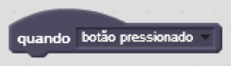
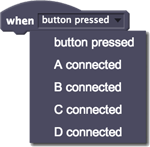

Execute um script quando o botão estiver pressionado ou quando as extremidades dos grampos tipo jacaré conectadas uma das quatro entradas (A-D) estiverem ligadas.

Quando o botão estiver pressionado, o script será executado.

Você pode selecionar o botão ou uma das quatro entradas numeradas A-D.
O PicoBoard vem com quatro grampos tipo jacaré que podem ser conectados à entradas A-D. Uma entrada está conectada se houver uma boa ligação elétrica entre as extremidades de metal dos grampos.